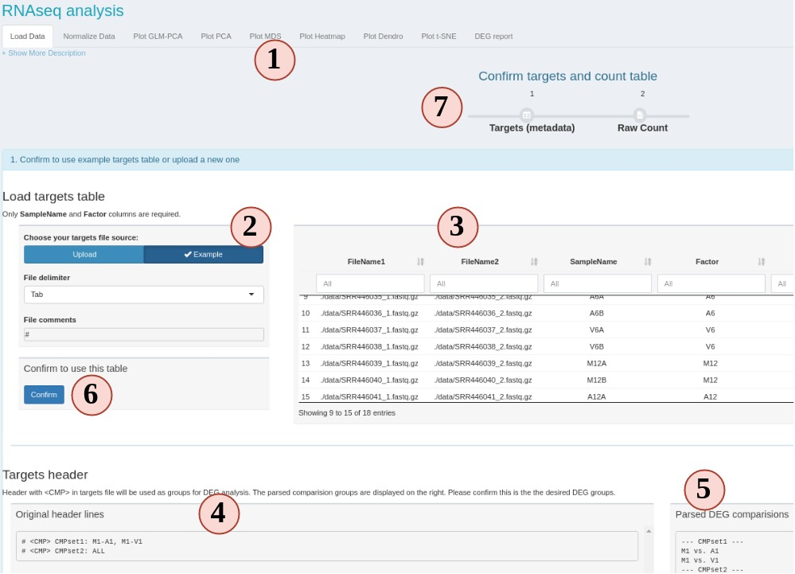
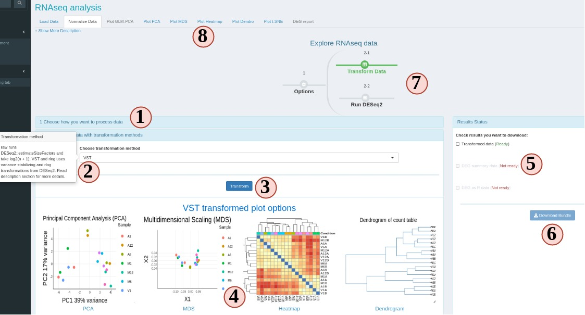
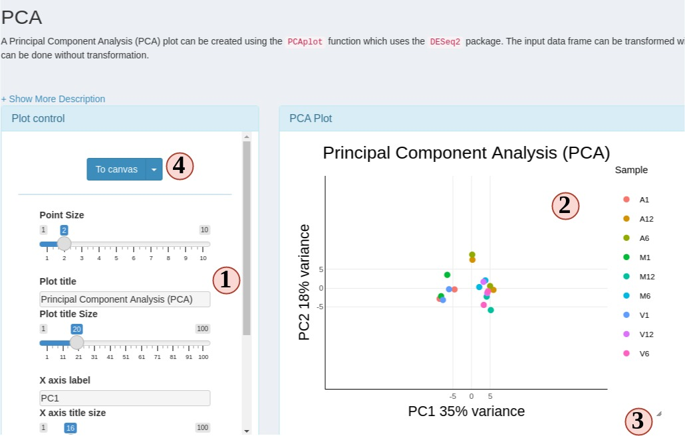
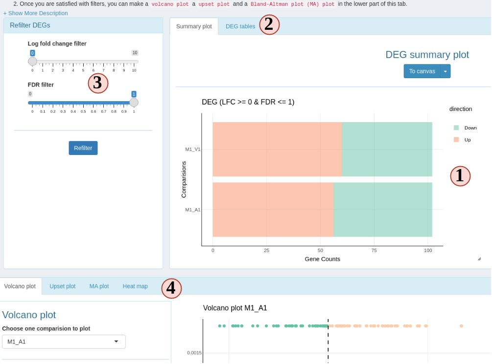

RNAseq
RNA-Seq Module
This is a module which takes a raw count table to do normalization, Differential gene expression (DEG) analysis, and finally helps users to generate different plots to visualize the results.
Prepare metadata and count table
To start, we require two files, the metadata file (targets) and a raw count table (Fig. 5).

Figure 5 RNAseq
- This is the RNAseq module UI when you first click it. All sub-tabs are disbled at the beginning. Other tabs will enabled as you proceed with different options.
- First, we need a metadata file to tell SPS what samples and conditions to use. Here, we use the metadata file from SPR, which is also known as “targets” file. If you are not familiar with the targets file, we suggest to use the workflow module step 2 to practice creating and checking the format. You can also use the example to see how it looks like.
- The loaded targets table is display here. You can use the box below each column
name to filter what samples to include/exclude. Only the “SampleName” and “Factor”
columns are used, other columns are ignored.
SampleNameshould be a unique character string without space for each row.Factoris the experiment design factors, or conditions, or treatments. - If you want to DEG analysis, DEG comparison groups are defined in the targets file header.
- The header will be parsed into comparison groups which contain individual comparisons. If the parsed comparison is not what you want, edit the header lines and reupload.
- If everything is expected, confirm to use this table.
- You should see the progress timeline of step 1 becomes green if your targets and header pass the format checking.
- (Not on figure) Similarly, use example or upload a count table and confirm to use it.
Note: For the count table, the first column will be used as gene names. Other column
names will be treated as sample names, and values in these columns are treated as
raw counts. Make sure columns except the first one are numeric, and replace NA
with 0.
Upon successfully confirm targets and count table, you should see the “Normalize Data” subtab is enabled. You can click on the top navigation or click the pop-up for the next step.
Process raw count
If this UI is displayed, that means your targets and count table are accepted by SPS (Fig 6). On this sub-tab, you can choose:
- Transform your count data with “raw”, “rlog” or “VST” and visualize the results in other sub-tabs.
- Do DEG analysis.
These two options are independent.

Figure 6 RNAseq Normalization
- At step 1 panel, choose how SPS can help you, count transformation or DEG analysis. The former will jump you to step 2, latter will jump to step 3.
- There are many options. If you are not clear, hover your mouse on the option, and some tips will show up.
- To start data transformation or DEG analysis.
- A gallery of different plot options will show up when the data process is done.
- When the data process is done, you can download results from the right side panel. Check all items you want and SPS will help you to zip it into one file to download.
- If at least one item is checked, downloading is enabled.
- Progress timeline will also change upon successful data process.
- Different visualization options will be enabled depending on the data process options.
Plot options
SPS RNAseq module provides 6 different plot options to cluster transformed count table.

Figure 6 RNAseq plots
- Change plot options to customize your plots.
- Most plots are Plotly plots, which means you can interact with these plots, like hiding/show groups, zoom in/out, etc.
- All SPS plots are resizable. Dragging the bottom-right corner icon to resize your plot.
- Click “To canvas” to take a screenshot of current plot and edit it in
SPS Canvastab. Or clicking the down-arrow button to directly save current plot to a png or jpg.
DEG report
This is a special sub-tab designed to filter and visualize DEG results. This sub-tab can be accessed once the DEG is calculated on the “Normalize Data” sub-tab.

Figure 7 RNAseq DEG
- DEG summary plot. You can view what are the DEG results across different comparision groups.
- Switch to view a ggplot friendly table. Different from the table you could download from “Normalize Data” subtab, this DEG table is rearranged so you can easily make a ggplot from it.
- You can change the filter settings here, so DEGs will be re-filtered and you do not need to go back to “Normalize Data” subtab to recalculate DEG.
- DEG plotting options. Choose from a volcano plot, an upset plot (intersection), a MA plot or a heatmap.
Interact with other bioconductor packages.
Locally
If you are familiar with R and want to continue other analysis after these, simple stop SPS:
- After count transformation, there is a
spsRNA_transobject stored in your R environment.rawmethod gives you a normalized count table. Other two methods give you aDESeq2class object. You can use it for other analysis. - After DEG analysis, SPS stores a global object called
spsDEG.It is asummerizedExperimentobject which has all individual tables from all DEG comparisons. You can use it for other downstream analysis.
Remotely
If you are using SPS from a remote server, you can choose to download results from
“Normalize Data” sub-tab. Choose results in tabular format or summerizedExperiment
format which is saved in a .rds file.